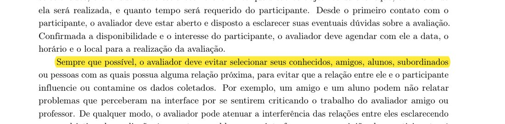
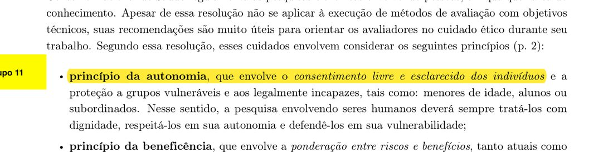

Questões práticas e éticas das avaliações
1. Introdução
Esta página detalha as duas etapas do framework DECIDE que tratam das condições de execução e do cuidado com as pessoas envolvidas: I (identificar e administrar as questões práticas) e D (decidir como lidar com as questões éticas). Ela vale para as sessões com participantes do storyboard de seis quadros e da HTA e da CTT do Gerenciador de Faltas do NoFluxoUnB, cujos objetivos, perguntas e métodos estão em Planejamento da avaliação do storyboard, Planejamento da avaliação da análise de tarefas, Métodos e Perguntas. O piloto está em Teste-piloto, a agenda das sessões em Logística das sessões e as datas em Cronograma planejado.
Barbosa et al. (2021) descrevem as duas atividades assim:
“Identificar e administrar as questões práticas da avaliação. Existem muitas questões práticas envolvidas numa avaliação de IHC, como, por exemplo, o recrutamento dos usuários que participarão da avaliação, a preparação e o uso dos equipamentos necessários, os prazos e o orçamento disponíveis, além da mão-de-obra necessária para conduzir a avaliação.”
Fonte: BARBOSA et al. (2021), cap. 11, seção 11.8 (framework DECIDE, atividade I), p. 280.
“Decidir como lidar com as questões éticas. Sempre que usuários são envolvidos numa avaliação, o avaliador deve tomar os cuidados éticos necessários (veja Seção 7.4). Os participantes da avaliação devem ser respeitados e não podem ser prejudicados direta ou indiretamente, nem durante os experimentos, nem após a divulgação dos resultados da avaliação.”
Fonte: BARBOSA et al. (2021), cap. 11, seção 11.8 (framework DECIDE, atividade D), p. 280.
O Plano de Ensino pede, na Apresentação 4, que o planejamento trate dessas duas atividades. O item 5 pede “o recrutamento dos usuários que participarão da avaliação (onde e o perfil), quantos usuários participarão da avaliação e a razão dessa quantidade, presencial real ou remota; a preparação e o uso dos equipamentos necessários, os prazos; o orçamento; recursos de mão-de-obra necessária para conduzir a avaliação”. O item 6 pede que se trate de “se os participantes da avaliação devem ser respeitados e não podem ser prejudicados direta ou indiretamente, nem durante os experimentos, nem após a divulgação dos resultados da avaliação”. A Tabela 20, na seção 7, mostra onde cada sub-item é atendido nesta página.
Estado deste documento. Isto é um planejamento. Nenhum participante foi recrutado e nenhuma sessão foi realizada até aqui. Tudo o que o grupo já documentou (cerca de 5 alunos para o storyboard, 3 a 5 para a HTA e a CTT, sessões de 15 a 20 minutos, um facilitador e um anotador, TCLE, gravação de áudio só com autorização, termos fora do repositório público, sem custo) aparece como decisão firmada. O que é decisão nova deste detalhamento está marcado como proposta do grupo, a validar. Campos de registro (códigos, datas e modalidade por participante) serão preenchidos na execução e ficam fora do repositório público quando identificarem pessoas.
2. Perfil dos participantes, quantidade e recrutamento
2.1 Perfil, critérios de inclusão e de exclusão. O livro orienta a buscar quem represente o público-alvo e lista fatores para descrever o perfil:
“Os avaliadores devem buscar participantes que representem o público-alvo do sistema avaliado, ou seja, que possuam características semelhantes aos usuários típicos. A definição dos perfis de participantes pode considerar fatores como: idade, sexo, formação acadêmica, grau de conhecimento sobre o domínio, nível de experiência na realização das tarefas e nível de experiência no uso do sistema avaliado e de sistemas semelhantes, por exemplo. Sempre que possível e pertinente, o avaliador deve buscar equilibrar o número de homens e mulheres.”
Fonte: BARBOSA et al. (2021), cap. 11, seção 11.7.2 (Preparação), p. 274.
O público-alvo do Gerenciador de Faltas são alunos de graduação da UnB, e o documento do grupo pede perfis variados (calouro e veterano) e, de preferência, alguns que já tiveram dificuldade para controlar faltas. A Tabela 16 transforma isso em critérios. As linhas marcadas como proposta são decisões novas do grupo, a validar.
| Cód. | Tipo | Critério | Base | Situação |
|---|---|---|---|---|
| I1 | Inclusão | Ser aluno de graduação da UnB com matrícula ativa no semestre. | Público-alvo do projeto; BARBOSA et al. (2021), cap. 11, p. 274. | Documentado pelo grupo |
| I2 | Inclusão | Ter 18 anos ou mais. | BARBOSA et al. (2021), cap. 7, 7.4, p. 141 e 142 (menores de idade são vulneráveis e exigem termo assinado pelo responsável legal). | Proposta do grupo, a validar |
| I3 | Inclusão | Incluir calouros e veteranos. Definição operacional sugerida: calouro é quem está até o 2º semestre; veterano, a partir do 3º. | Perfil variado pedido pelo grupo; fator “nível de experiência” em BARBOSA et al. (2021), cap. 11, p. 274. | Perfis documentados; corte de semestres é proposta do grupo, a validar |
| I4 | Inclusão (preferência) | Ter tido dificuldade para controlar faltas. Não é obrigatório para todos, apenas desejável para alguns. | Documentado pelo grupo; “grau de conhecimento sobre o domínio”, p. 274. | Documentado pelo grupo |
| I5 | Inclusão | Estar cursando pelo menos uma disciplina neste semestre, para que o assunto “faltas” seja concreto para a pessoa. | Decisão do grupo a partir do domínio do problema. | Proposta do grupo, a validar |
| I6 | Inclusão | Ter disponibilidade de 15 a 20 minutos entre 16 e 21/10, de forma presencial ou remota. | Sessões de 15 a 20 minutos e janela do cronograma; BARBOSA et al. (2021), cap. 11, p. 276 (agendar data, horário e local). | Documentado pelo grupo |
| I7 | Inclusão | Equilibrar homens e mulheres sempre que possível e pertinente. | BARBOSA et al. (2021), cap. 11, p. 274. | Proposta do grupo, a validar |
| E1 | Exclusão | Integrantes do grupo e qualquer pessoa que tenha participado do planejamento, do design ou da preparação dos artefatos. | BARBOSA et al. (2021), cap. 11, p. 263 e 276. | Proposta do grupo, a validar |
| E2 | Exclusão (sempre que possível) | Conhecidos, amigos, subordinados ou pessoas com relação próxima ou hierárquica com o facilitador da sessão. | BARBOSA et al. (2021), cap. 11, p. 276 (citação abaixo). | Proposta do grupo, a validar |
| E3 | Exclusão | Menores de 18 anos. | BARBOSA et al. (2021), cap. 7, p. 141 e 142. | Proposta do grupo, a validar |
| E4 | Exclusão | Quem participou do teste-piloto não participa das sessões definitivas. | BARBOSA et al. (2021), cap. 7, 7.1, p. 137 e cap. 11, p. 276. | Proposta do grupo, a validar |
| E5 | Exclusão (HTA e CTT) | Quem participou da sessão do storyboard não participa da sessão da HTA e da CTT. | Documentado pelo grupo (“diferentes dos que avaliaram o storyboard, para reduzir viés”). | Documentado pelo grupo |
| E6 | Não é critério de exclusão | Recusar a gravação de áudio. A pessoa participa mesmo assim, com anotações. | BARBOSA et al. (2021), cap. 7, p. 141 (permissão para gravar). | Documentado pelo grupo |
Fonte: elaboração do grupo, com base em BARBOSA et al. (2021), cap. 11, seção 11.7.2, p. 274 e 276; cap. 7, seção 7.4, p. 141 e 142.
A razão do critério E2 está no livro:
“Sempre que possível, o avaliador deve evitar selecionar seus conhecidos, amigos, alunos, subordinados ou pessoas com as quais possua alguma relação próxima, para evitar que a relação entre ele e o participante influencie ou contamine os dados coletados.”
Fonte: BARBOSA et al. (2021), cap. 11, seção 11.7.2, p. 276.

Há duas observações sobre essa regra. Primeiro, a palavra “alunos” se refere a alunos do avaliador. Como os avaliadores deste grupo são estudantes, o equivalente é evitar pessoas com relação próxima ou hierárquica com quem conduz a sessão. Segundo, a regra diz “sempre que possível”: numa comunidade pequena como a de um campus, pode ser difícil evitar todos os conhecidos. Nesse caso, o livro dá a atenuação:
“De qualquer modo, o avaliador pode atenuar a interferência das relações entre eles esclarecendo que o objetivo da avaliação é encontrar problemas na interface e que a opinião dos participantes é importante para melhorá-la.”
Fonte: BARBOSA et al. (2021), cap. 11, seção 11.7.2, p. 276.
Há ainda uma limitação que o grupo reconhece: cada integrante conduz as sessões sobre os próprios artefatos, e o livro recomenda neutralidade:
“[...] por avaliadores que não participaram da concepção da solução, pois eles possuem melhores condições de analisar a solução sob um ponto de vista mais neutro”
Fonte: BARBOSA et al. (2021), cap. 11, seção 11.1, p. 263 (a frase começa no fim da p. 262).
Para reduzir esse risco, o roteiro é o mesmo para todos, as perguntas são abertas e neutras, e outro integrante atua como anotador. O relato registra a limitação.
2.2 Quantidade de participantes e razão. O livro traz duas referências para o número de usuários:
“Dumas e Redish (1999) relatam que uma avaliação de IHC em geral envolve de cinco a 12 usuários. Nielsen (2000), por sua vez, afirma que bastam cinco usuários para encontrarmos a maioria dos problemas na interface (85%, segundo o seu experimento), alcançando uma boa relação custo–benefício.”
Fonte: BARBOSA et al. (2021), cap. 11, seção 11.7.2, p. 274.
E avisa que o objetivo, aqui, não é uma estatística:
“Por isso, uma avaliação de IHC com frequência pretende apenas obter indícios sobre a qualidade de uso do sistema e sobre como aumentá-la. Em outras palavras, mesmo quando os resultados não são estatisticamente significativos, eles podem ser úteis para o reprojeto do sistema avaliado.”
Fonte: BARBOSA et al. (2021), cap. 11, seção 11.7.2, p. 275.
A Tabela 17 aplica essas referências. O storyboard fica com cerca de cinco participantes, o número que Nielsen considera suficiente para a maioria dos problemas e o piso da faixa de Dumas e Redish. A HTA e a CTT ficam com três a cinco, abaixo do piso de Dumas e Redish no caso de três. A razão para aceitar esse número menor é que a HTA e a CTT já passam por inspeção com dois avaliadores independentes, e o livro sugere justamente combinar métodos:
“Se o objetivo da avaliação for encontrar problemas de IHC, o avaliador pode julgar mais adequado empregar um método por inspeção para cobrir (quase) toda a interface, e selecionar um pequeno número de partes importantes a serem avaliadas por um método de observação ou de investigação.”
Fonte: BARBOSA et al. (2021), cap. 11, seção 11.6, p. 273.
| Atividade | Quantidade | Quem | Duração | Razão da quantidade |
|---|---|---|---|---|
| Sessão de avaliação do storyboard (entrevista semiestruturada) | Cerca de 5 alunos | Alunos da UnB, calouros e veteranos | 15 a 20 min | Nielsen (2000): cinco usuários bastam para a maioria dos problemas; Dumas e Redish (1999): de cinco a 12. BARBOSA et al. (2021), cap. 11, p. 274. |
| Sessão de comentário da HTA e da CTT, com entrevista pós-sessão | 3 a 5 alunos, diferentes dos do storyboard | Alunos da UnB | 15 a 20 min (proposta do grupo, a validar) | A inspeção por dois avaliadores cobre os modelos inteiros e as sessões aprofundam pontos selecionados (cap. 11, p. 273); busca de indícios, não de significância estatística (cap. 11, p. 275). A diferença em relação ao storyboard é para reduzir viés (documentado pelo grupo). |
| Inspeção da HTA e da CTT com lista de verificação | 2 avaliadores do grupo, independentes | Integrantes do grupo | Fora das sessões | Confiabilidade: concordância entre dois avaliadores (documentado pelo grupo). |
| Teste-piloto | 1 sessão | Uma pessoa com perfil semelhante, que não tenha participado do planejamento | 15 a 20 min | Avaliar o próprio planejamento; dados descartados. BARBOSA et al. (2021), cap. 11, p. 276. |
| Total de alunos nas sessões definitivas | De 8 a 10 | Todos distintos entre si | Sem limite superior | Soma dos dois grupos de sessões; o piloto é uma pessoa à parte. |
Fonte: elaboração do grupo, com base no documento da Entrega 4 e em BARBOSA et al. (2021), cap. 11, p. 273 a 276. Os números valem para os artefatos do Gerenciador de Faltas; para os conjuntos de artefatos dos outros integrantes o mesmo critério se aplicaria, a confirmar.
A duração de 15 a 20 minutos respeita o limite que o livro dá para uma tarefa:
“O tempo estimado para um participante realizar cada tarefa não deveria ultrapassar 20 minutos.”
Fonte: BARBOSA et al. (2021), cap. 11, seção 11.7.2, p. 275.
Se, ao fim das três primeiras sessões da HTA e da CTT, as respostas não mostrarem recorrências, o grupo amplia até cinco participantes dentro da janela de 16 a 21/10 (proposta do grupo, a validar).
2.3 Estratégia de recrutamento e agendamento. O livro descreve o recrutamento em dois passos, conferir o perfil e convidar com informação clara:
“Para recrutar participantes com os perfis especificados, o avaliador pode utilizar questionários ou entrevistas curtas a fim de conferir se uma pessoa possui o perfil desejado. Ao convidar os participantes selecionados, o avaliador deve esclarecer brevemente quais são os objetivos da avaliação, como e onde ela será realizada, e quanto tempo será requerido do participante.”
Fonte: BARBOSA et al. (2021), cap. 11, seção 11.7.2, p. 276.
A estratégia abaixo segue esses passos. O onde do recrutamento é proposta do grupo, a validar: a comunidade de estudantes de graduação da UnB, com prioridade para a Faculdade UnB Gama (FGA) por ser o campus do grupo, e os canais do próprio projeto NoFluxoUnB. Para não recrutar só quem tem relação próxima com os integrantes (critério E2), o convite deve circular em canais abertos de turmas e de estudantes, e cada integrante recruta preferencialmente fora do próprio círculo.
- Convite (14 a 16/10). Mensagem curta com o objetivo, o artefato (storyboard ou modelos), onde e como será (presencial no campus ou remoto), a duração de 15 a 20 minutos, que a gravação, se houver, é só de áudio e é opcional, e que não há pagamento. O livro manda dizer isso já no recrutamento: “Devemos informar aos participantes logo no recrutamento sobre os tipos de gravações que serão realizadas, para evitar mal-entendidos ou desistências no momento da atividade.” (BARBOSA et al., 2021, cap. 7, seção 7.4, p. 141).
- Triagem (14 a 16/10). Questionário de poucas perguntas para conferir os critérios I1, I2, I3, I5 e E2 (proposta do grupo, a validar). Guarda-se apenas o contato necessário, fora do repositório público.
- Seleção. Entre os que atendem, o grupo escolhe cerca de cinco para o storyboard, misturando calouros e veteranos e incluindo alguns que já tiveram dificuldade com faltas, e de três a cinco, diferentes desses, para a HTA e a CTT. Convém manter uma ou duas pessoas em reserva para faltas de última hora (proposta do grupo, a validar).
- Agendamento (até 16/10 para as primeiras sessões). Confirmada a disponibilidade, o facilitador combina data, horário e modalidade dentro da janela de 16 a 21/10. O livro diz: “Confirmada a disponibilidade e o interesse do participante, o avaliador deve agendar com ele a data, o horário e o local para a realização da avaliação.” (BARBOSA et al., 2021, cap. 11, p. 276). O termo é enviado antes, para leitura, porque o livro pede que as informações sejam “comunicadas ao participante durante o processo de recrutamento e depois reiteradas no início da atividade através de um termo de consentimento” (cap. 7, p. 141).
- Controle do recrutamento. Uma tabela de controle, mantida fora do repositório público, com código do participante (P01, P02 e assim por diante), perfil (calouro ou veterano), artefato, data, modalidade, termo recebido e autorização de gravação (sim ou não). Todos esses campos são de registro e serão preenchidos na execução.
- Piloto (14 a 16/10). Uma sessão com pessoa de perfil semelhante que não tenha participado do planejamento. Segundo o livro, “Para o teste-piloto, não há muito problema em convidar um colega de trabalho, um amigo, ou uma pessoa mais próxima do avaliador, pois os dados coletados serão descartados. Entretanto, esse participante não deve ter se envolvido no planejamento e na preparação da avaliação.” (BARBOSA et al., 2021, cap. 11, p. 276). A pessoa do piloto não volta nas sessões definitivas (critério E4).
3. Recursos, equipamentos, infraestrutura e mão de obra
O livro define o que cabe a esta etapa:
“O planejamento de uma avaliação envolve questões práticas, que incluem alocar pessoal, recursos e equipamentos e preparar o material de apoio. Uma avaliação com usuários requer também a preparação do ambiente de teste, a realização de um teste-piloto e o recrutamento dos participantes. Ela envolve ainda questões éticas, apresentadas na Seção 7.4.”
Fonte: BARBOSA et al. (2021), cap. 11, seção 11.7.2, p. 275.
Modalidade: presencial no campus, com remota como alternativa (proposta do grupo, a validar). O grupo escolhe a sessão presencial no campus da UnB Gama como modalidade principal e a sessão remota por videoconferência quando o aluno não puder comparecer. Os motivos são os seguintes. Primeiro, o material é visual (storyboard, HTA e CTT impressos ou em tela), e o livro diz que materiais de apoio ajudam o participante a manter o foco: “o uso de um sistema ou de materiais de apoio, como imagens, cenários e outros tipos de artefatos, pode contribuir para a investigação, ajudando os usuários a se lembrarem de suas experiências e expectativas e também a manterem o foco nas questões de interesse” (BARBOSA et al., 2021, cap. 11, seção 11.6, p. 272). Presencialmente, o artefato impresso fica ao alcance do participante e do anotador. Segundo, o termo é assinado em duas vias na hora, como o livro descreve (cap. 7, p. 141). Terceiro, uma sala simples basta: “Dependendo do método utilizado, uma sala de reunião com mesa e cadeiras pode ser um ambiente adequado para realizar uma avaliação.” (cap. 11, seção 11.4, p. 268). A alternativa remota existe para alcançar quem não pode ir ao campus, e o livro a reconhece: “é possível conduzir entrevistas por telefone ou on-line, em geral através de um sistema de comunicação síncrona (como chat ou videoconferência)” (cap. 7, seção 7.5.1, p. 147). A alternativa descartada foi usar só sessões remotas: ela dependeria da conexão de cada participante e tornaria a assinatura do termo e a guarda dos documentos menos controláveis. O contexto real de uso (acompanhar faltas ao longo do semestre) não é reproduzido nas sessões, e o grupo registra isso como limitação de validade ecológica.
Prazos. Recrutamento, preparação dos instrumentos e piloto de uma sessão entre 14 e 16/10; sessões de 16 a 21/10; análise de 22 a 23/10; relato de 23 a 24/10; postagem em 25/10 (datas do cronograma do grupo, em Cronograma planejado). O livro lembra que o plano precisa caber nos recursos: “o avaliador precisa escolher métodos de avaliação adequados ao prazo, orçamento, equipamentos, número de usuários acessíveis, número de avaliadores capacitados e experientes em cada método e demais recursos disponíveis.” (BARBOSA et al., 2021, cap. 11, seção 11.6, p. 273).
Equipamentos. O livro diz que “Equipamentos para o registro de dados, como câmeras, máquinas fotográficas e gravadores de áudio são comumente utilizados na coleta de dados” (cap. 11, p. 275). O grupo usa só gravação de áudio, e só com autorização. A razão de não gravar imagem é do livro: “Devemos registrar apenas dados que possam contribuir com os objetivos da avaliação. Além do desperdício de recursos, registrar dados desnecessários pode tornar a sessão de uso mais artificial e constrangedora para os participantes. Por exemplo, gravar a imagem dos participantes em vídeo pode intimidá-los desnecessariamente, caso o vídeo não seja analisado.” (cap. 11, p. 276). O grupo não vai analisar imagem, e por isso não a grava. Antes de cada sessão o gravador é testado, e o piloto confere se o registro ficou audível.
Mão de obra. Cada sessão tem um facilitador, que conduz a entrevista, e um anotador, que registra as falas e o que o participante faz com o artefato. Na inspeção da HTA e da CTT há dois avaliadores independentes, que são integrantes do grupo. Cada integrante conduz as sessões sobre os próprios artefatos, e outro integrante atua como anotador e segundo avaliador (documentado pelo grupo). Para que todos recebam o mesmo tratamento, vale o que o livro pede: “Para assegurar a validade do estudo, é importante que todos os participantes recebam o mesmo material, as mesmas informações e orientações.” (cap. 11, p. 275). A Tabela 18 reúne os recursos.
| Recurso | Especificação | Uso na avaliação | Responsável | Situação |
|---|---|---|---|---|
| Storyboard de seis quadros | Impresso ou em tela | Artefato apresentado a cada participante | Integrante que conduz a sessão | Documentado pelo grupo |
| HTA e CTT | Impressas ou em tela | Modelos comentados pelo participante | Integrante que conduz a sessão | Documentado pelo grupo |
| Roteiro de entrevista semiestruturada | O mesmo para todos os participantes do artefato | Guia da conversa; garante a mesma informação a todos | Facilitador | Documentado pelo grupo |
| Lista de verificação e planilha de registro de discrepâncias | Versões da bibliografia da disciplina | Inspeção independente da HTA e da CTT | Dois avaliadores | Documentado pelo grupo |
| TCLE | Duas vias por participante; na sessão remota, versão enviada antes e devolvida assinada ou confirmada por escrito | Consentimento e autorização de gravação | Facilitador | Duas vias documentadas; envio remoto é proposta do grupo, a validar |
| Folha de anotações | Campos por pergunta, código P01 e hora | Registro do anotador; garante o dado mesmo sem gravação | Anotador | Proposta do grupo, a validar |
| Gravador de áudio | Dispositivo já disponível a um integrante (por exemplo, o celular); só áudio | Gravação autorizada, para análise pela equipe | Anotador | Áudio documentado; dispositivo é proposta do grupo, a validar |
| Espaço presencial | Sala silenciosa e confortável no campus UnB Gama, a reservar | Sessão sem interrupções | Integrante que conduz a sessão | Proposta do grupo, a validar |
| Videoconferência | Plataforma gratuita, a definir pelo grupo; gravação só de áudio, com autorização | Sessão remota | Facilitador | Remota documentada; plataforma a definir |
| Armazenamento dos dados | Pasta de acesso restrito à equipe, fora do repositório público | Termos, gravações e anotações | Equipe | Guarda fora do repositório documentada |
| Facilitador | Um por sessão | Conduz a entrevista e o TCLE | Cada integrante, nos próprios artefatos | Documentado pelo grupo |
| Anotador e segundo avaliador | Um por sessão; outro integrante | Registra a sessão e é o 2º avaliador na inspeção | Outro integrante | Documentado pelo grupo |
| Participantes | Ver Tabelas 16 e 17 | Comentam os artefatos | Sem limite superior | Ver seção 2 |
Fonte: elaboração do grupo, com base no documento da Entrega 4 e em BARBOSA et al. (2021), cap. 11, p. 272, 275 e 276, e cap. 7, p. 141 e 147.
4. Orçamento
O orçamento previsto é zero, como o grupo documentou (“sem custo”). A escolha cabe no argumento do livro de que avaliar não é caro: “O custo de avaliar a qualidade de uso não costuma ser alto quando comparado ao orçamento global de um projeto de desenvolvimento” (BARBOSA et al., 2021, cap. 11, seção 11.1, p. 263). Métodos que usam o artefato e conversas curtas, sem laboratório, mantêm o custo baixo. A Tabela 19 detalha as linhas.
| Item | Descrição | Quantidade | Custo previsto (R$) | Observação |
|---|---|---|---|---|
| Pagamento aos participantes | Não há | 0 | 0,00 | No Brasil, em pesquisa científica não se paga participante (ver abaixo). |
| Ressarcimento de despesas | Transporte e alimentação, se houver gasto decorrente da sessão | Sem previsão | 0,00 | Sessões no campus ou remotas; se surgir despesa, o ressarcimento é permitido e será registrado. |
| Incentivos (brindes, vale-presente) | Não oferecidos | 0 | 0,00 | Proposta do grupo, a validar. |
| Impressão de storyboard, HTA, CTT, roteiros e TCLE | Impressão própria dos integrantes ou exibição em tela | Conforme as sessões | 0,00 | Custo irrisório absorvido pelo integrante; nunca repassado ao participante. |
| Gravação de áudio | Dispositivo que o integrante já possui | 1 por sessão | 0,00 | Proposta do grupo, a validar. |
| Videoconferência | Plataforma gratuita | Conforme as sessões remotas | 0,00 | Plataforma a definir. |
| Espaço físico | Sala no campus UnB Gama | Conforme as sessões presenciais | 0,00 | Reserva a confirmar. |
| Armazenamento e análise | Pasta restrita e planilhas | 1 | 0,00 | Ferramentas gratuitas. |
| Mão de obra | Quatro integrantes, dentro da carga da disciplina | 4 | 0,00 | Sem remuneração; é atividade da disciplina. |
| Total | 0,00 | Estimativa de planejamento; qualquer gasto efetivo será registrado no relato. |
Fonte: elaboração do grupo (documento da Entrega 4: “sem custo”); regra sobre pagamento em BARBOSA et al. (2021), cap. 7, seção 7.4, p. 142.
Restrição brasileira sobre pagar participantes. O livro registra:
“É importante notar que no Brasil não é permitido pagar para as pessoas participarem de uma pesquisa científica, como ocorre em outros países. Para pesquisas científicas, no Brasil só é permitido ressarcir as despesas decorrentes da participação da pesquisa, basicamente transporte e alimentação nos dias de participação. Essa restrição não se aplica a pesquisas de cunho técnico ou prático, como, por exemplo, uma pesquisa visando ao reprojeto de um sistema comercial.”
Fonte: BARBOSA et al. (2021), cap. 7, seção 7.4, p. 142.
A última frase mostra que a restrição não vale para pesquisa de cunho técnico. Mesmo assim, o grupo adota a regra mais restritiva: não paga, não oferece incentivo e só ressarciria despesas efetivas. O motivo é que a atividade é acadêmica e o TCLE do grupo já afirma que não há remuneração (proposta do grupo, a validar). Isso também evita que um incentivo influencie a opinião do participante.
5. Questões éticas
O livro atribui a responsabilidade à equipe: “É de responsabilidade da equipe de design proteger o bem-estar físico e psicológico dos participantes de qualquer estudo, pesquisa ou análise realizada” (BARBOSA et al., 2021, cap. 7, seção 7.4, p. 140). Ele também explica o estatuto das resoluções brasileiras: “Apesar de essa resolução não se aplicar à execução de métodos de avaliação com objetivos técnicos, suas recomendações são muito úteis para orientar os avaliadores no cuidado ético durante seu trabalho.” (p. 140). O grupo segue essas recomendações como orientação. Os documentos do grupo não registram análise por comitê de ética, e o texto não afirma que houve.
5.1 Os quatro princípios aplicados a esta avaliação. O livro lista quatro princípios (p. 140). Cada um é citado a seguir e aplicado às sessões do grupo.
“princípio da autonomia, que envolve o consentimento livre e esclarecido dos indivíduos e a proteção a grupos vulneráveis e aos legalmente incapazes, tais como: menores de idade, alunos ou subordinados.”
Fonte: BARBOSA et al. (2021), cap. 7, seção 7.4, p. 140.
- Aplicação. Os participantes são alunos, que o livro cita como grupo vulnerável, mas ele admite exceção quando os alunos são o perfil buscado: “Devemos evitar a participação de sujeitos vulneráveis, tais como: menores de idade, alunos ou subordinados, a menos que este seja explicitamente o perfil dos participantes. Nesses casos, o pesquisador deve tomar um cuidado ainda maior para não causar constrangimentos ou danos aos participantes.” (cap. 7, p. 142). Como o Gerenciador de Faltas é para alunos da UnB, o perfil é explícito, e o cuidado maior se traduz em: só maiores de 18 anos (E3), ninguém com relação hierárquica com o facilitador (E2), TCLE com duas autorizações separadas e direito de sair a qualquer momento.
“princípio da beneficência, que envolve a ponderação entre riscos e benefícios, tanto atuais como potenciais, individuais ou coletivos, comprometendo-se com o máximo de benefícios e o mínimo de danos e riscos.”
Fonte: BARBOSA et al. (2021), cap. 7, seção 7.4, p. 140.
- Aplicação. O risco é mínimo: uma conversa de 15 a 20 minutos sobre modelos, sem exigir dados pessoais. O benefício é coletivo e indireto: melhorar o Gerenciador de Faltas para a comunidade estudantil. Para manter o risco baixo, a gravação é só de áudio e opcional, e o participante não precisa dizer quantas faltas tem de verdade.
“princípio da não maleficência, que envolve a garantia de evitar danos previsíveis relacionados à pesquisa, tanto os imediatos quanto os tardios”
Fonte: BARBOSA et al. (2021), cap. 7, seção 7.4, p. 140.
- Aplicação. O dano previsível neste tema é o aluno se expor por ter muitas faltas, ou por criticar uma disciplina ou um professor, e isso chegar a terceiros (dano tardio, depois da divulgação). Por isso o storyboard usa dados fictícios, ninguém é perguntado sobre a própria frequência, nomes de professores ou de pessoas citadas são mascarados no relato (“[nome]”), e o relato apresenta recorrências do grupo, não falas atribuídas a uma pessoa identificável.
“princípio da justiça e equidade, relacionado à relevância social da pesquisa, com vantagens significativas para os participantes da pesquisa e minimização do ônus para os participantes vulneráveis”
Fonte: BARBOSA et al. (2021), cap. 7, seção 7.4, p. 140.
- Aplicação. A relevância social está em apoiar o controle de faltas de estudantes. O ônus é pequeno: sessão curta, no campus ou remota, sem custo para a pessoa, com escolha de participantes variada (calouro e veterano) em vez de apenas quem é próximo do grupo. Os participantes avaliam os modelos e não são avaliados. O livro pede o mesmo: “no caso de observação de uso de um produto, devemos enfatizar que é o produto que será avaliado, e não o participante.” (cap. 7, p. 142). Oferecer ao participante, antes da publicação, a leitura dos trechos que o citam é proposta do grupo, a validar, e acompanha o livro (ver 5.2).

5.2 Cuidados concretos do planejamento. Os cuidados que o grupo documentou (TCLE, direito de desistir, anonimato, gravação só com autorização, termos fora do repositório público, storyboard com dados fictícios, participantes não avaliados) se desdobram assim:
- Consentimento livre e esclarecido. O livro diz: “Todo participante de qualquer estudo tem o direito de saber o objetivo do estudo, a duração estimada, os procedimentos de coleta de dados, o uso que será feito da informação coletada, os seus direitos enquanto participante do estudo e quaisquer riscos, desconfortos ou efeitos adversos relacionados à sua participação no estudo.” (cap. 7, p. 141). A minuta da seção 6 traz cada um desses itens. O termo é assinado também pelo responsável pela sessão, e uma via fica com cada parte (cap. 7, p. 141).
- Direito de desistir e conforto. “O participante tem o direito e a liberdade de se recusar a participar ou retirar seu consentimento e abandonar o estudo em qualquer fase da pesquisa, sem ser penalizado por isso.” (cap. 7, p. 142). O facilitador interrompe a sessão ao notar constrangimento (“Sempre que o pesquisador perceber que o participante está passando por algum tipo de constrangimento ou incômodo físico, emocional ou psíquico, deve interromper a pesquisa antes que o participante tenha mais sofrimentos desnecessários.”, cap. 7, p. 142) e oferece pausa de água. O participante é tratado como colaborador, nunca como “cobaia” (cap. 7, p. 142).
- Privacidade e confidencialidade dos dados brutos. “O pesquisador deve garantir aos participantes a confidencialidade e a privacidade dos dados brutos coletados. Com o consentimento dos participantes, os dados brutos são compartilhados apenas com os pesquisadores. Ninguém mais deve ter acesso a esses dados brutos.” (cap. 7, p. 141). Termos, gravações e anotações ficam em pasta restrita à equipe, fora do repositório público. Os dados são descartados ao final da disciplina, salvo necessidade justificada e informada, o que acompanha o livro: “os dados devem ser mantidos apenas enquanto forem relevantes. Quando não precisarem mais ser utilizados, devem ser descartados.” (cap. 7, seção 7.4, p. 143).
- Anonimização e identificação por código. “Ao divulgar os resultados da avaliação, o avaliador deve garantir o anonimato dos participantes, a preservação das suas imagens e a utilização cuidadosa das informações coletadas. Isso significa não divulgar seus nomes ou qualquer outra informação que possa identificá-los.” (cap. 7, p. 141). O livro sugere a prática: “É comum utilizar nomes fictícios ou números em todo o material coletado para identificá-los apenas assim no relato dos resultados de uma pesquisa.” (p. 141). O grupo identifica cada pessoa por código (P01, P02 e assim por diante) em todo o material coletado e no relato. A tabela que liga código a nome, se existir, fica fora do repositório. Nomes de terceiros e de professores são mascarados: “Nem o nome do participante, nem os nomes dos seus conhecidos podem ser divulgados, devendo ser substituídos por nomes fictícios ou por alguma máscara, como “[nome]”.” (p. 141). Num grupo pequeno, o perfil pode identificar: “A idade, a profissão e o sexo dos participantes também podem identificá-los, caso o participante seja diferente dos demais” (p. 141). Por isso o relato descreve o perfil do grupo (por exemplo, “dois calouros e três veteranos”) e não o de cada pessoa. E, quando houver crítica aos dados: “o pesquisador deve relatar o que ocorreu com um grupo de participantes e os motivos para isso, em vez de criticar ou apresentar falhas de um participante específico. Sempre que possível, os participantes devem ter acesso aos resultados da pesquisa antes que eles sejam publicados.” (p. 141).
- Autorização para gravar voz e imagem. “É necessário obter permissão para gravar a voz ou imagem de qualquer pessoa, antes de começar a gravação.” (cap. 7, p. 141). O TCLE tem uma autorização própria e separada para o áudio, e recusar não impede a participação. Não há gravação de imagem ou vídeo nesta avaliação, pela razão do livro citada na seção 3 (cap. 11, p. 276). O livro afirma que “As entrevistas costumam ser gravadas em áudio. Além dessa gravação, os entrevistadores podem fazer algumas anotações durante a entrevista.” (cap. 7, p. 147). Sem autorização, o anotador registra tudo por escrito.
- Sem prejuízo depois da divulgação. O relato é publicado no GitHub Pages do projeto, aberto ao público. Por isso ele só contém códigos, recorrências do grupo e trechos mascarados, e os termos assinados nunca entram no repositório. Isso responde ao ponto do livro e do Plano de Ensino de que os participantes “não podem ser prejudicados direta ou indiretamente, nem durante os experimentos, nem após a divulgação dos resultados da avaliação” (cap. 11, p. 280).
6. Minuta do TCLE para as sessões
A minuta abaixo deriva do TCLE do grupo para o NoFluxoUnB (TCLE_NoFluxoUnB.pdf, seções 1 a 10), mantendo a mesma estrutura e adaptando o conteúdo às sessões desta avaliação. É proposta do grupo, a validar. Mudanças em relação ao termo original:
- Objeto: o termo original avalia o NoFluxoUnB em entrevista, grupo de foco ou brainstorming de 30 minutos a 2 horas. Esta minuta trata de sessões de 15 a 20 minutos sobre o storyboard, a HTA e a CTT do Gerenciador de Faltas.
- Gravação: o termo original autoriza áudio e vídeo em itens separados. A minuta mantém só o áudio, porque o grupo não grava imagem.
- Autorizações: a minuta tem duas, separadas, a de participar (que inclui o uso anonimizado dos dados, descrito na seção 7 do termo) e a de gravar áudio. O termo original tem uma autorização própria para o uso e a divulgação anonimizada dos dados; aqui ela foi incorporada ao consentimento de participar, porque o participante é informado do uso na seção 7 antes de decidir.
- Menores de 18 anos: o termo original prevê assinatura do responsável legal. Esta avaliação só admite maiores de 18 anos.
- Foram omitidas a matrícula e as assinaturas do termo original. Os campos de assinatura ficam em branco.
TERMO DE CONSENTIMENTO LIVRE E ESCLARECIDO (TCLE)
Sessões de avaliação do storyboard, da HTA e da CTT do Gerenciador de Faltas do NoFluxoUnB, Disciplina de Interação Humano-Computador
Universidade de Brasília (UnB), Faculdade UnB Gama (FGA). Orientador: Prof. Dr. André Barros de Sales. Grupo 02: Felipe Lopes Pedroza, Matheus do Vale Lameira, Tiago Sousa Nepomuceno e Victor Andreozzi de La Rocque Couto. Responsável por esta sessão: [nome do integrante que conduz a sessão, a preencher]. Artefato desta sessão (marcar um): [ ] Storyboard [ ] HTA e CTT. Código do participante: P__ (preenchido pela equipe).
1. Convite e objetivo do estudo. Você está sendo convidado(a) a participar, de forma voluntária, de uma avaliação conduzida pela equipe da disciplina de Interação Humano-Computador (UnB/FGA). O objetivo é verificar se o storyboard (ou os modelos de tarefas HTA e CTT) do Gerenciador de Faltas, uma funcionalidade do NoFluxoUnB, plataforma de planejamento acadêmico para estudantes da UnB, representa bem o problema de controlar faltas e é compreendido por alunos, para orientar ajustes antes de a funcionalidade ser construída. Você não está sendo avaliado(a): quem é avaliado é o material.
2. Procedimentos. A sessão é individual, tem duração de cerca de 15 a 20 minutos e pode ser presencial, no campus, ou remota. Você verá o storyboard de seis quadros (ou os modelos HTA e CTT) e responderá a perguntas sobre o que entendeu e o que achou. Não há respostas certas ou erradas. O storyboard usa dados fictícios: você não precisa informar sua frequência real, nem dados acadêmicos pessoais.
3. Gravação. Pedimos, em separado, sua autorização para gravar somente o áudio da sessão, exclusivamente para análise pela equipe. Não haverá gravação de vídeo nem de imagem. Nenhuma gravação será feita sem a sua autorização explícita, indicada na seção 10. Se você não autorizar, a sessão ocorre do mesmo jeito, com anotações escritas.
4. Riscos e desconfortos. Os riscos são mínimos e podem envolver algum desconforto ao opinar. Você não é obrigado(a) a responder a nenhuma pergunta e pode interromper sua participação a qualquer momento, sem prejuízo. Se a equipe perceber desconforto, a sessão será interrompida.
5. Benefícios. Não há pagamento nem benefício financeiro, conforme a legislação brasileira, que não permite pagar participantes de pesquisa científica (só o ressarcimento de despesas decorrentes da participação, quando houver). Os benefícios são indiretos: sua participação ajuda a melhorar o Gerenciador de Faltas para a comunidade estudantil da UnB.
6. Confidencialidade e anonimato. Seu nome não será divulgado em relatório, apresentação ou material do projeto. Você será identificado(a) por um código (por exemplo, P01). Este termo, as gravações e as anotações terão acesso restrito à equipe, ficarão guardados de forma segura, fora do repositório público do projeto, e serão descartados ao final da disciplina, salvo necessidade justificada e informada de guarda por mais tempo.
7. Uso e divulgação dos dados. Suas respostas poderão ser citadas, sempre de forma anônima, no relato da avaliação publicado no GitHub Pages do projeto e em trabalhos e apresentações da disciplina. Nomes de pessoas que você eventualmente citar serão substituídos por “[nome]”. Se você quiser, poderá ler os trechos que o(a) citam antes da publicação.
8. Participação voluntária e direito de desistência. Sua participação é voluntária. Você pode se recusar a participar ou retirar seu consentimento a qualquer momento, antes, durante ou depois da sessão, sem justificativa e sem prejuízo. Esta avaliação é destinada a pessoas com 18 anos ou mais.
9. Contato. Em caso de dúvidas, procure o integrante responsável pela sessão ou a equipe do Grupo 02, na Faculdade UnB Gama, sob orientação do Prof. Dr. André Barros de Sales. Contato da equipe: [canal a definir antes das sessões].
10. Declaração de consentimento. De posse das informações acima, e tendo tido a oportunidade de esclarecer minhas dúvidas, declaro:
Autorização 1: Participação e uso anonimizado dos dados (Seção 7).
( ) Dou meu consentimento livre e esclarecido para participar da sessão descrita neste termo.
( ) Não consinto em participar.
Autorização 2: Gravação de áudio (separada; recusar não impede a participação).
( ) Autorizo a gravação do áudio da sessão.
( ) Não autorizo a gravação.
Local: ____________________ Data: ___/___/______
Assinatura do(a) participante: ____________________
Assinatura do(a) responsável pela sessão: ____________________
Nome do(a) participante: ____________________ Nome do(a) responsável: ____________________
Este termo é redigido em duas vias de igual teor: uma fica com o(a) participante e a outra com a equipe. Em sessão remota, o termo é enviado antes e devolvido assinado ou confirmado por escrito (proposta do grupo, a validar).
Fonte: derivado de TCLE_NoFluxoUnB (Grupo 02, 25/09/2026), seções 1 a 10; estrutura e cuidados conforme BARBOSA et al. (2021), cap. 7, seção 7.4, p. 141 e 142 (exemplo de termo na p. 142).
7. Conformidade
7.1 Itens 5 e 6 do Plano de Ensino. A Tabela 20 liga cada sub-item pedido para a Apresentação 4 ao ponto desta página em que ele é tratado. Fonte do pedido: SALES (2026), Plano de Ensino, Apresentação 4, itens 5 e 6, p. 13 do PDF.
| Item | Sub-item pedido | Onde está nesta página | Como é atendido |
|---|---|---|---|
| 5 | Recrutamento dos usuários: onde | Seção 2.3 | Comunidade de alunos de graduação da UnB, prioridade FGA, e canais do projeto (proposta do grupo, a validar). |
| 5 | Recrutamento dos usuários: perfil | Seção 2.1, Tabela 16 | Critérios de inclusão (I1 a I7) e de exclusão (E1 a E5). |
| 5 | Quantos usuários participarão e a razão dessa quantidade | Seção 2.2, Tabela 17 | Cerca de 5 (storyboard) e 3 a 5 (HTA e CTT), com Dumas e Redish (1999) e Nielsen (2000) em BARBOSA et al. (2021), p. 274. |
| 5 | Presencial real ou remota | Seção 3 | Presencial no campus como principal, remota como alternativa, com motivos e alternativa descartada. |
| 5 | Preparação e uso dos equipamentos | Seção 3, Tabela 18 | Gravador de áudio testado antes de cada sessão, material impresso ou em tela, sala preparada, piloto para conferir o registro. |
| 5 | Prazos | Seções 2.3 e 3 | Recrutamento e piloto de 14 a 16/10; sessões de 16 a 21/10; análise de 22 a 23/10; relato de 23 a 24/10; postagem em 25/10. |
| 5 | Orçamento | Seção 4, Tabela 19 | Total previsto de R$ 0,00, com a regra brasileira sobre pagamento de participantes. |
| 5 | Recursos de mão de obra | Seção 3, Tabela 18 | Facilitador, anotador e segundo avaliador, com dois avaliadores independentes na inspeção. |
| 6 | Participantes respeitados | Seção 5.2, seção 6 | Consentimento, conforto, tratamento respeitoso, os participantes avaliam os modelos e não são avaliados. |
| 6 | Participantes não prejudicados durante os experimentos | Seções 5.1 e 5.2 | Direito de desistir, interrupção diante de constrangimento, dados fictícios, ninguém é obrigado a informar frequência real. |
| 6 | Participantes não prejudicados após a divulgação dos resultados | Seções 5.2 e 6 | Anonimato por código, perfil descrito só para o grupo, nomes de terceiros mascarados, termos fora do repositório público. |
Fonte: SALES, A. B. de. Plano de Ensino: Interação Humano-Computador. Brasília: UnB, 2026, p. 13 do PDF (Apresentação 4, itens 5 e 6), e esta página.
7.2 Cuidados do livro. A Tabela 21 cruza cada cuidado do livro (incluindo as diretrizes da seção 7.4) com a página em que está e com o ponto do planejamento que o atende.
| Cuidado do livro | Fonte (obra, seção, página) | Onde o planejamento atende | Situação |
|---|---|---|---|
| Quatro princípios: autonomia, beneficência, não maleficência, justiça e equidade | BARBOSA et al. (2021), cap. 7, 7.4, p. 140 | Seção 5.1 (um bloco por princípio) | Atendido no planejamento |
| Proteger o bem-estar físico e psicológico dos participantes | Cap. 7, 7.4, p. 140 | Seções 5.1 e 5.2; Tabela 18 (pausas e sala confortável) | Atendido no planejamento |
| Explicar objetivos e como será a participação; esclarecer dúvidas | Cap. 7, 7.4, p. 141 | Convite (seção 2.3), minuta do TCLE, seções 1 e 2 | Atendido no planejamento |
| Confidencialidade e privacidade dos dados brutos; acesso só dos pesquisadores | Cap. 7, 7.4, p. 141 | Seção 5.2; minuta, seção 6; Tabela 18 (armazenamento restrito) | Atendido no planejamento |
| Anonimato e preservação das imagens na divulgação | Cap. 7, 7.4, p. 141 | Códigos P01 em todo o material; não há gravação de imagem | Atendido no planejamento |
| Nomes fictícios ou números; máscara “[nome]” para terceiros | Cap. 7, 7.4, p. 141 | Seção 5.2; minuta, seção 7 | Atendido no planejamento |
| Idade, profissão e sexo podem identificar; relatar por grupo e não criticar uma pessoa | Cap. 7, 7.4, p. 141 | Perfil descrito só para o grupo no relato; seção 5.2 | Atendido no planejamento |
| Participantes com acesso aos resultados antes da publicação, sempre que possível | Cap. 7, 7.4, p. 141 | Minuta, seção 7 (leitura opcional dos trechos) | Proposta do grupo, a validar |
| Permissão para gravar voz ou imagem antes de gravar; avisar no recrutamento | Cap. 7, 7.4, p. 141 | Convite (seção 2.3); Autorização 2 do TCLE | Atendido no planejamento |
| Consentimento livre e esclarecido por termo; assinado também pelo responsável; uma via para cada parte | Cap. 7, 7.4, p. 141 | Minuta do TCLE, seções 8 a 10 | Atendido no planejamento |
| Menores de 18 anos exigem assinatura do responsável legal | Cap. 7, 7.4, p. 141 | Critérios I2 e E3: só maiores de 18 anos | Proposta do grupo, a validar |
| Conforto; tratamento respeitoso; é o produto que é avaliado, e não o participante | Cap. 7, 7.4, p. 142 | Seção 5.1 (justiça e equidade); minuta, seção 1 | Atendido no planejamento |
| Direito de recusar ou desistir sem penalidade; interromper diante de constrangimento | Cap. 7, 7.4, p. 142 | Minuta, seções 4 e 8; seção 5.2 | Atendido no planejamento |
| Evitar sujeitos vulneráveis (alunos) salvo perfil explícito, com cuidado maior | Cap. 7, 7.4, p. 142 | Seção 5.1 (autonomia); Tabela 16 (E2, E3) | Atendido no planejamento |
| Não pagar participantes em pesquisa científica; só ressarcir despesas | Cap. 7, 7.4, p. 142 | Seção 4, Tabela 19; minuta, seção 5 | Atendido no planejamento |
| Manter os dados só enquanto relevantes e descartar depois | Cap. 7, 7.4, p. 143 | Minuta, seção 6 (descarte ao final da disciplina) | Atendido no planejamento |
| Dados livres de tendenciosidade; informar limitações | Cap. 7, 7.4, p. 143 | Mesmo roteiro para todos; perguntas neutras; limitações no relato (validade ecológica e neutralidade) | Atendido no planejamento; limitações a registrar no relato |
| Respeitar os participantes e não prejudicá-los durante nem após a divulgação | BARBOSA et al. (2021), cap. 11, 11.8, p. 280 | Seção 5 e Tabela 20 (item 6) | Atendido no planejamento |
| Representar o público-alvo e descrever o perfil; equilibrar homens e mulheres | Cap. 11, 11.7.2, p. 274 | Tabela 16 | Atendido; equilíbrio é proposta do grupo, a validar |
| Número de participantes: de cinco a 12 (Dumas e Redish); cinco bastam (Nielsen) | Cap. 11, 11.7.2, p. 274 | Seção 2.2, Tabela 17 | Atendido; 3 participantes na HTA e CTT ficam abaixo da faixa, com justificativa |
| Evitar conhecidos, amigos, alunos e subordinados; atenuar a interferência | Cap. 11, 11.7.2, p. 276 | Critério E2; seção 2.1 | Proposta do grupo, a validar |
| Recrutar com questionário ou entrevista curta; convidar explicando objetivo, local e tempo; agendar | Cap. 11, 11.7.2, p. 276 | Seção 2.3 | Atendido no planejamento |
| Mesmo material, mesmas informações e orientações para todos | Cap. 11, 11.7.2, p. 275 | Tabela 18 (roteiro único) | Atendido no planejamento |
| Registrar só dados úteis; gravar vídeo pode intimidar | Cap. 11, 11.7.2, p. 276 | Só áudio; seção 3 | Atendido no planejamento |
| Teste-piloto; dados descartados; participante do piloto não participou do planejamento | Cap. 11, 11.7.2, p. 276; cap. 7, 7.1, p. 137 | Seção 2.3, passo 6; critério E4 | Atendido no planejamento |
| Escolher métodos adequados ao prazo, orçamento, equipamentos e número de usuários acessíveis | Cap. 11, 11.6, p. 273 | Seções 3 e 4; Tabelas 18 e 19 | Atendido no planejamento |
Fonte: elaboração do grupo, com base em BARBOSA et al. (2021), cap. 7, seção 7.4, p. 140 a 143, e cap. 11, seções 11.6 a 11.8, p. 273 a 280.
Referências
- BARBOSA, S. D. J.; SILVA, B. S. da; SILVEIRA, M. S.; GASPARINI, I.; DARIN, T.; BARBOSA, G. D. J. Interação Humano-Computador e Experiência do Usuário. Capítulo 7, Análise e Definição dos Requisitos, seção 7.1, p. 137; seção 7.4 (Aspectos Éticos de Pesquisas Envolvendo Pessoas), p. 140 a 143; seção 7.5.1, p. 147. Rio de Janeiro, 2021.
- BARBOSA, S. D. J. et al. Interação Humano-Computador e Experiência do Usuário. Capítulo 11, Planejamento da Avaliação de IHC, seção 11.1, p. 263; 11.4, p. 268; 11.6, p. 272 e 273; 11.7.2 (Preparação), p. 274 a 276; 11.8 (Framework DECIDE), p. 280. Rio de Janeiro, 2021.
- SALES, A. B. de. Plano de Ensino: Interação Humano-Computador. Brasília: Universidade de Brasília, Faculdade UnB Gama, 2026. Apresentação 4, itens 5 e 6, p. 13 do PDF.
- PREECE, J.; ROGERS, Y.; SHARP, H. Interaction Design: Beyond Human-Computer Interaction. Wiley, 2002 (framework DECIDE, conforme apresentado em Barbosa et al., cap. 11, p. 280).
- GRUPO 02. TCLE do projeto de avaliação do NoFluxoUnB. Universidade de Brasília, 25/09/2026 (base da minuta da seção 6; assinaturas e matrícula omitidas).
Histórico de versão
| Versão | Data | Descrição | Autor(es) | Revisor(es) |
|---|---|---|---|---|
| 1.0 | 12/10/2026 | Publicação da Entrega 4 (planejamento da avaliação do storyboard e da análise de tarefas) a partir do documento do grupo, dividida em artefatos, com nomes e matrículas de Felipe, Matheus e Victor (issue #59) | Felipe Lopes Pedroza, Matheus do Vale Lameira e Victor Andreozzi de La Rocque Couto | A definir (validação pendente) |
| 1.1 | 13/10/2026 | Inclusão da lista de verificação do Storyboard (15 itens, com respostas, textos de origem, fontes e fotos dos trechos), em artefatos por atividade do DECIDE (issue #61) | Matheus do Vale Lameira | A definir (validação pendente) |
| 1.2 | 13/10/2026 | Autoria da lista de verificação do Storyboard (Matheus e Felipe) e inclusão dos vídeos da lista de verificação e da apresentação da Entrega 4 (issue #62) | Matheus do Vale Lameira e Felipe Lopes Pedroza | A definir (validação pendente) |
| 1.3 | 13/10/2026 | Publicação da parte individual de Felipe (Gerenciador de Faltas) com o cronograma até 03/11/2026, dividida em artefatos (issue #63) | Felipe Lopes Pedroza (conteúdo); Matheus do Vale Lameira (publicação) | A definir (validação pendente) |
| 1.4 | 13/10/2026 | Correção da atribuição da parte individual (Gerenciador de Faltas, com cronograma): a entrega do documento é de Victor, Matheus e Felipe, com os três nomes e matrículas no cabeçalho (issue #64) | Victor Andreozzi de La Rocque Couto, Matheus do Vale Lameira e Felipe Lopes Pedroza | A definir (validação pendente) |
| 1.5 | 13/10/2026 | Retirado o rótulo de parte individual do documento do Gerenciador de Faltas (cabeçalho e parágrafo de abertura): o documento é do grupo, feito por Victor, Matheus e Felipe (issue #65) | Victor Andreozzi de La Rocque Couto, Matheus do Vale Lameira e Felipe Lopes Pedroza | A definir (validação pendente) |
| 1.6 | 13/10/2026 | Removido o documento do Gerenciador de Faltas (visão geral, seções 1 a 5 e referências) da Entrega 4 (issue #66) | Victor Andreozzi de La Rocque Couto, Matheus do Vale Lameira e Felipe Lopes Pedroza | A definir (validação pendente) |
| 1.7 | 13/10/2026 | Documento da Entrega 4 substituído pela versão com o cronograma até 03/11/2026 (seções 1 a 5), de Victor, Matheus e Felipe, sem o rótulo de parte individual; itens da lista que citam a Seção 5 ligados ao cronograma (issue #67) | Victor Andreozzi de La Rocque Couto, Matheus do Vale Lameira e Felipe Lopes Pedroza | A definir (validação pendente) |
| 1.8 | 15/10/2026 | Ampliação da Entrega 4 nos moldes do Plano de Ensino: métodos, modos e motivos; perguntas e critérios; questões práticas e éticas; teste-piloto; logística das sessões; estrutura do relato; cronograma planejado e executado; concordância com o livro; tabela de contribuição e agradecimentos (issues #68 a #72) | Victor Andreozzi de La Rocque Couto, Matheus do Vale Lameira e Felipe Lopes Pedroza | A definir (validação pendente) |
| 1.9 | 18/10/2026 | Menu lateral reorganizado em grupos (visão geral, documento do grupo, planejamento ampliado, lista de verificação e planejamentos individuais) e inclusão do planejamento do relato dos resultados do Matheus (issue #75) | Matheus do Vale Lameira | A definir (validação pendente) |
| 1.11 | 18/10/2026 | Removido o planejamento individual da avaliação do Matheus, que fica somente com o planejamento do relato dos resultados; menu, navegação e tabela de contribuição ajustados e fonte das citações corrigida (issues #79 e #80) | Matheus do Vale Lameira | A definir (validação pendente) |
| 1.15 | 18/10/2026 | Planejamentos individuais organizados por integrante no menu e na visão geral; o nome do integrante abre os artefatos dele e sai do título (issue #85) | Matheus do Vale Lameira | A definir (validação pendente) |
| 1.16 | 18/10/2026 | Planejamento do relato do Matheus dividido em cinco artefatos no menu e na visão geral, sob o nome do integrante (issue #86) | Matheus do Vale Lameira | A definir (validação pendente) |